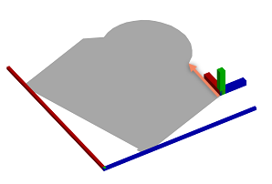
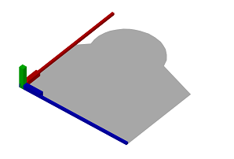

alignScopeToGeometryBBox operation
Syntax
alignScopeToGeometryBBox(alignAxes)
Parameters
- alignAxes (selector)
xy, yx The scope x and y axes are aligned. The scope z axis stays fixed. xz, zx The scope x and z axes are aligned. The scope y axis stays fixed. yz, zy The scope y and z axes are aligned. The scope x axis stays fixed.
Description
The alignScopeToGeometryBBox operation manipulates the scope and the pivot in the following way:
- The two scope axes given by alignAxes are aligned such that they span a minimum area bounding rectangle that encloses the footprint of the geometry as seen from the third scope axis. The third scope axis stays fixed. It acts as the rotation axis for the alignment.
- The first scope axis given by alignAxes becomes the longer extent of the bounding rectangle. The longer extent is
- the scope x axis for xy and xz,
- the scope y axis for yx and yz and
- the scope z axis for zx and zy.
- The pivot is placed at the origin of the scope.
Related
- alignScopeToAxes operation
- alignScopeToGeometry operation
- setPivot operation
- scope attribute
- pivot attribute
Example
|  | Lot --> Lot. The initial shape. The initial scope x axis and pivot x axis are aligned to the first edge of the geometry (illustrated with an arrow). The y axes are aligned to the face normal. The origin of the pivot is situated at the first edge. |
|  | Lot --> alignScopeToGeometryBBox(xz) The scope x and z axes are aligned to the geometry. The scope x axis is oriented along the larger extent of the minimum area bounding rectangle of the geometry. The pivot is placed at the origin of the scope. |
Copyright ©2008-2021 Esri R&D Center Zurich. All rights reserved.